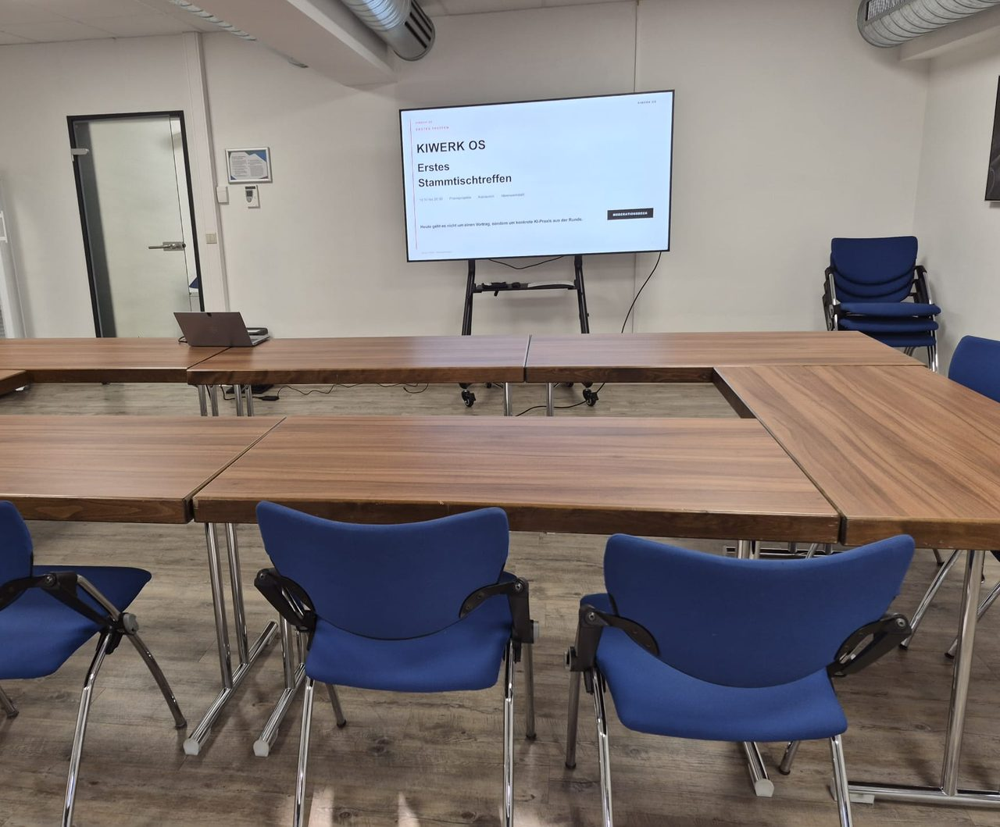
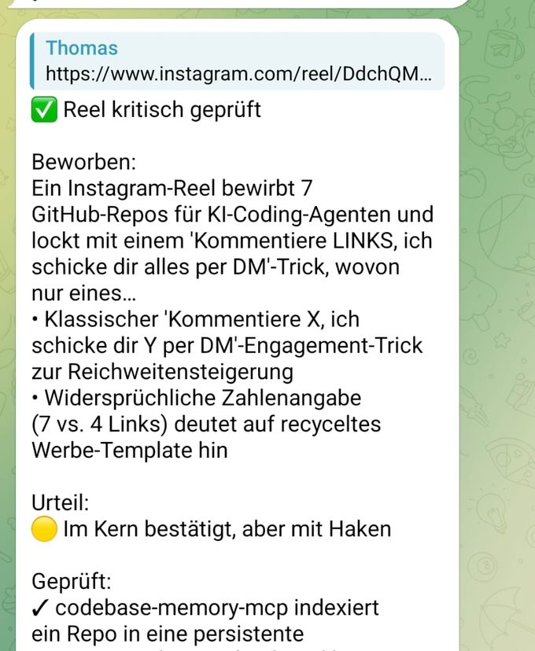
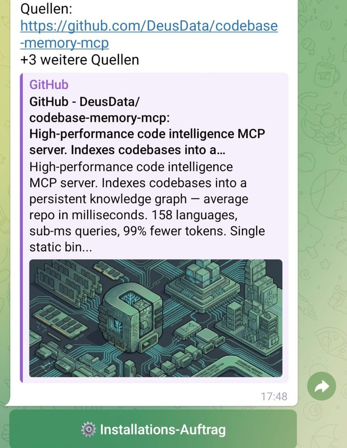

Rückblicke · KIWERK OS #01
02.09.2026
Der erste praktische KIWERK-Abend in Osnabrück: eine kleine Runde, zwei gezeigte Praxisprojekte und ein gemeinsamer Workshop.
Der Abend in Zahlen
- Teilnehmer
- 7 Personen, inklusive Organisator
- Dauer
- 18:30 bis ca. 20:45 Uhr
- Ort
- Lagerhalle e.V., Osnabrück
- Erfahrung
- gemischte Erfahrungsstände
Was an dem Abend passiert ist
Ein fester Ablauf mit viel Raum für eigene Ideen.
-
Ankommen und Vorstellungsrunde
Kurzer Einstieg in den Abend, dann eine Runde, in der jeder sich und seinen Hintergrund vorstellt.
-
Praxisprojekte
Zwei Praxisprojekte aus der Runde werden vorgestellt.
-
Individuelles Brainstorming
Jede Person sammelt in fünf bis zehn Minuten drei mögliche KI- oder Automatisierungs-Cases aus Beruf oder Privatleben.
-
Zwei Dreiergruppen
Die Ideen werden in zwei kleinen Gruppen diskutiert und priorisiert, jede Gruppe wählt ihre zwei besten Ideen.
-
Vorstellung und Austausch
Die vier favorisierten Ideen werden der ganzen Runde vorgestellt, danach offener Austausch und Diskussion.

Zwei Praxisprojekte
Reale Lösungen von Teilnehmern, keine Vorträge.
Dokumentenprozess automatisiert, ohne klassischen Entwicklerhintergrund
Ein Teilnehmer zeigte, wie er einen wiederkehrenden PDF-, Excel- und CSV-Prozess aus seinem Arbeitsalltag mit Vibe Coding für sich automatisiert hat: PDF-Rechnungen mussten bisher manuell ausgelesen, in Excel übertragen und als CSV fürs ERP exportiert werden. Die Lösung entstand auf dem eigenen Firmenlaptop, zunächst als persönliche Arbeitserleichterung. Der Arbeitgeber bleibt hier bewusst anonym, ein Bild gibt es dazu bewusst nicht.
- 1 · Eingang
PDF-Rechnung
- 2 · Auslesen
Daten auslesen
- 3 · Übertrag
Excel
- 4 · Export
CSV
- 5 · Weiterverarbeitung
ERP
Besonders spannend war der Austausch mit einem anwesenden ITler, der Code, Struktur und Aufbau der Lösung genauer nachvollziehen wollte. Der Ersteller selbst war überrascht, wie umfangreich der generierte Code ausfiel: ein anschauliches Beispiel für den Unterschied zwischen fachlichem Problemverständnis, klassischer Softwareentwicklung und den neuen Möglichkeiten durch Vibe Coding.
Vom Instagram-Reel zur Quellenrecherche
Ein Telegram-Assistent analysiert einen geteilten Reel-Link, fasst die Kernaussagen zusammen und kann anschließend über den Button „Recherche starten" eine vertiefte Recherche mit Quellen auslösen. So lässt sich schneller prüfen, ob hinter einem interessanten Reel tatsächlich belastbare Informationen stecken.
- 1
Instagram-Reel
- 2
an Telegram-Bot senden
- 3
kritische Kurzprüfung
- 4
vertiefte Recherche
- 5
Quellen


Ideen aus dem Workshop
Aus Einzel- und Gruppenphasen entstanden, mit kleinem Startauftrag.
Aus dem gemeinsamen Brainstorming wurden drei Ideen bis zu einem kleinen MVP, möglichen Tool-Wegen und einem Startauftrag zum direkten Ausprobieren aufbereitet.
Aus dem Workshop entstanden
-
Smartes Kochen & Vorräte
Kassenbon → Lebensmittelliste → Rezeptideen
-
E-Mail-Assistent
Mail → Kategorie / Zusammenfassung / Daten → Antwortentwurf
-
Content Publisher
Markenbriefing + Thema → Beitragsideen → fertiger Post
7-seitige Ausarbeitung herunterladen
Was hängen blieb
- Die unterschiedlichen Erfahrungsstände haben den Austausch eher verbessert als gebremst: Fachanwender und technisch erfahrene Teilnehmer brachten unterschiedliche Perspektiven ein.
- Der Moment, in dem ein ITler den von Vibe Coding erzeugten Code sehen wollte, um Struktur und Aufbau nachzuvollziehen, und der Ersteller selbst über dessen Umfang staunte, blieb besonders im Gedächtnis.
- Eine praktische Erkenntnis aus der Runde: ChatGPT kann auch vollständige Projektdateien beziehungsweise ZIP-Ausgaben erzeugen, für viele ein kleiner Aha-Moment.
Der Austausch war so lebhaft, dass die geplanten zwei Stunden am ersten Abend etwas überzogen wurden.
Beim nächsten Treffen dabei sein
Unsere öffentlichen Präsenztreffen finden am ersten Donnerstag im Monat in Osnabrück statt. Die Teilnahme kostet 10 € pro Person.